Ramsol's Repository
Upcycled Speaker
These upcycled speakers are made from components and wires salvaged from abandoned speakers on the street. Watch how it was made:
https://youtu.be/fQYhwbhCHIw
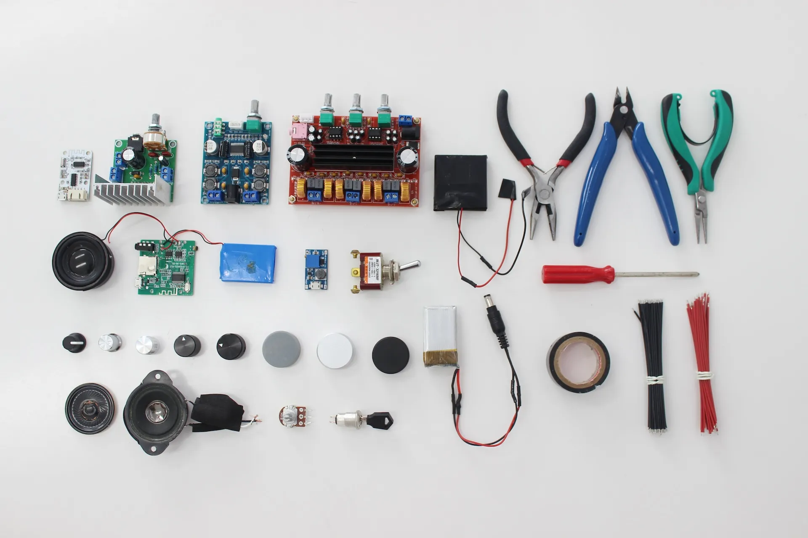 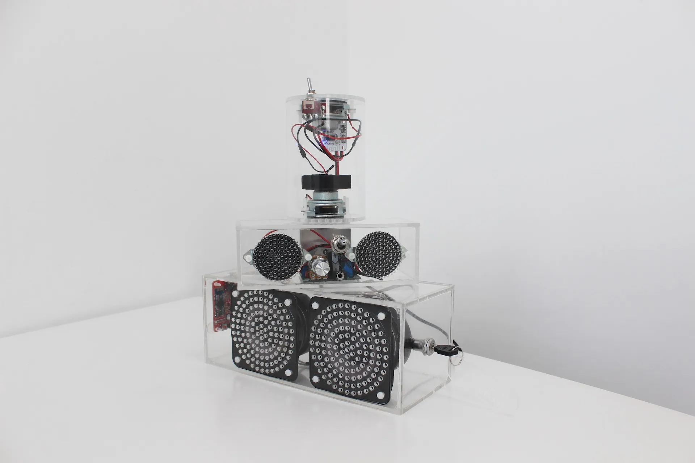 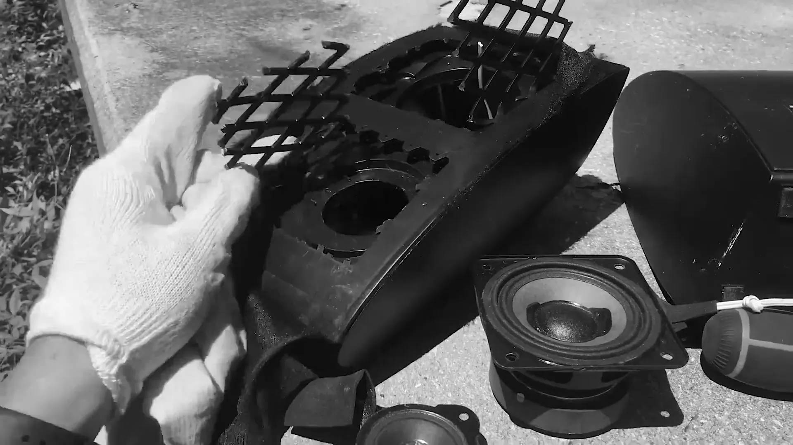 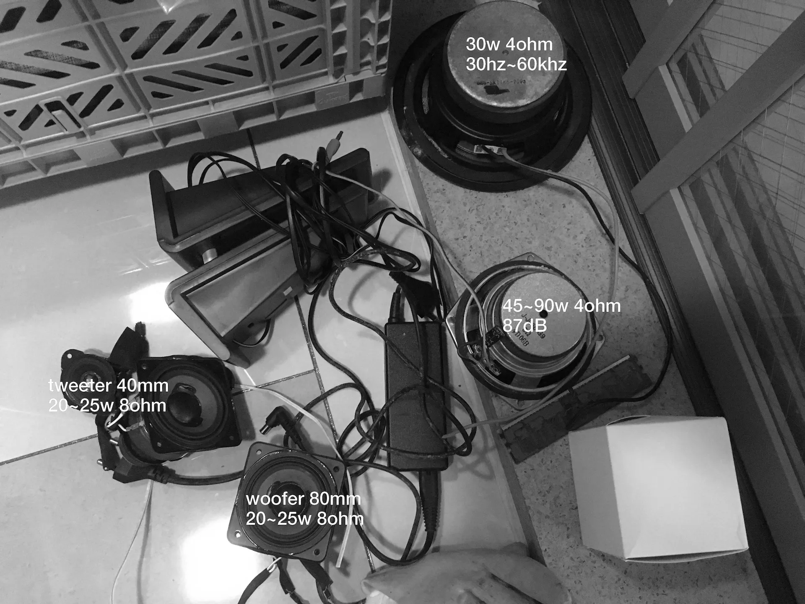 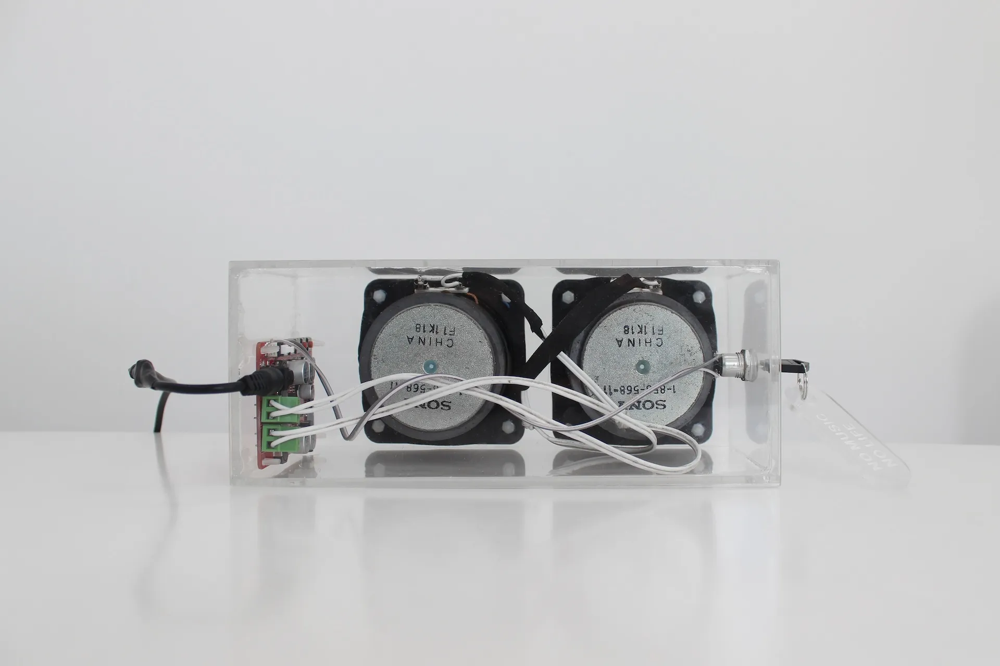 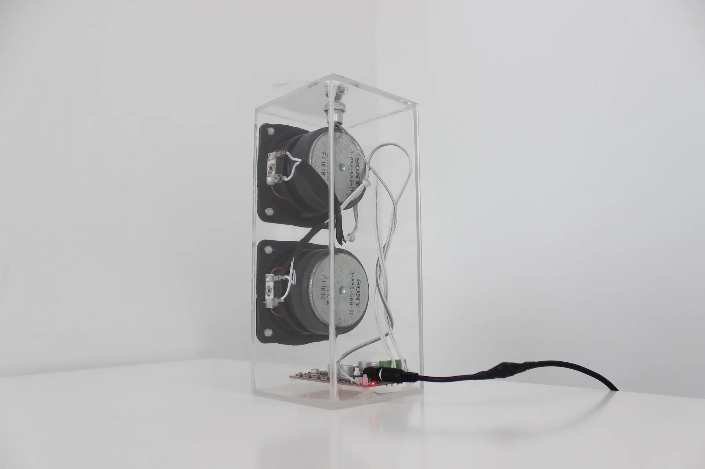 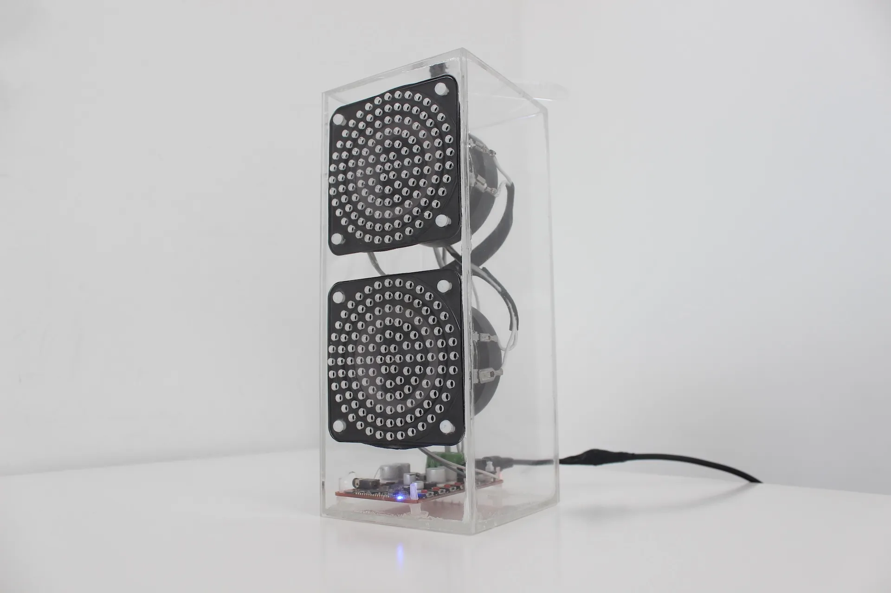 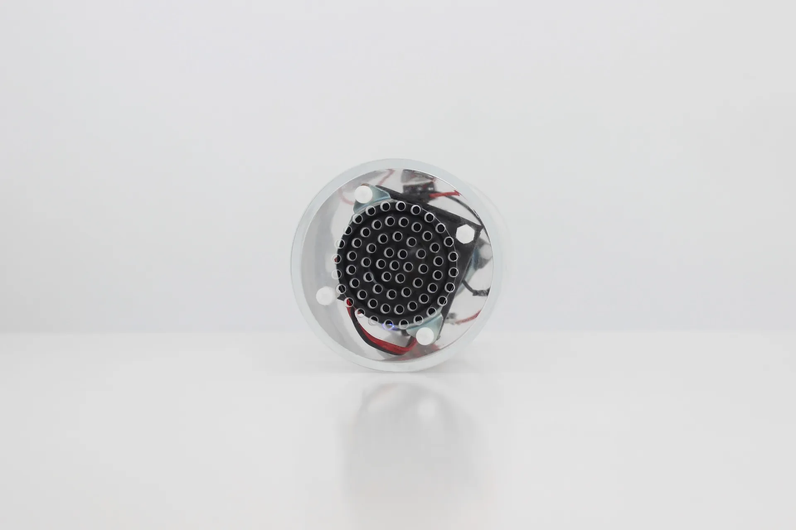 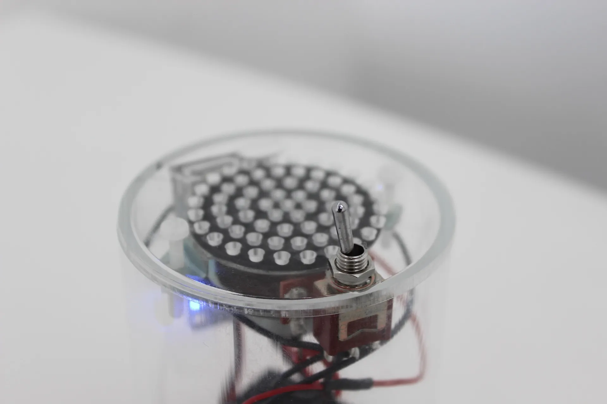 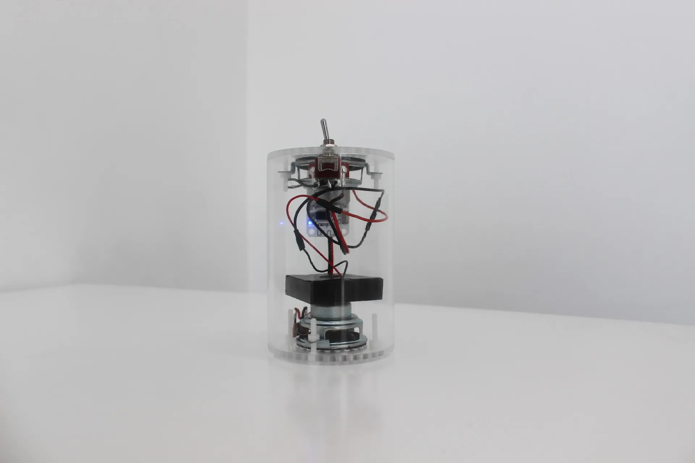 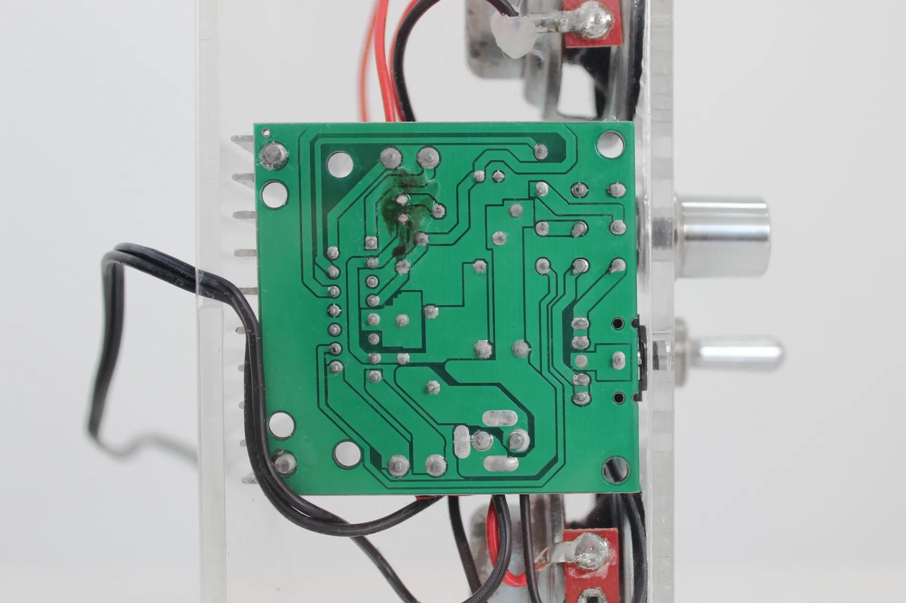 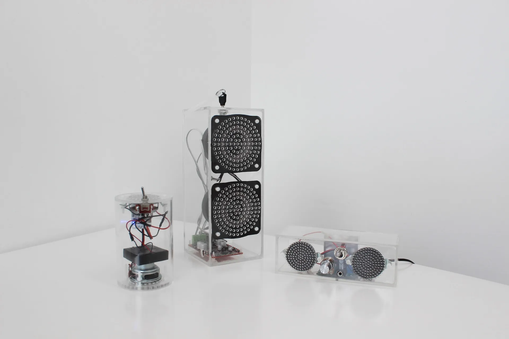